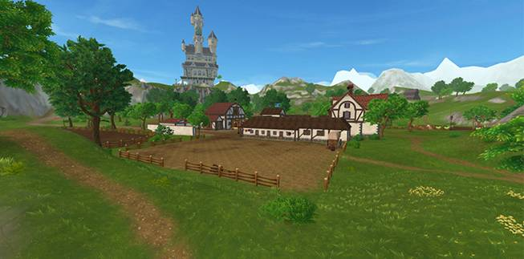

|
|
|
||||
|
Как я достигла 9 уровня? С самого начала моего
летсплея в Star Stable я проходила задания для новичков и повышала свой
уровень. Открывала новые локации и т.д. Но а так же у меня был статус Star Rider на 3 дня. И я
не тратя времени проходила все задания что бы открыть всё более новые локации
и повышать свой уровень. Но вот спустя 3 дня у меня закончился статус Star Rider. И я почти
перестала заходить в Star Stable. Ну или заходила для того что бы просто побегать по конюшне.Но вот
однажды я зашала в ВКонтакте в группу о Star Stable и увидела 2 кода для этой игры. Это были коды на: 50 Star Coins и на 14 дней статуса Star Rider. И я сразу же зашла в свой аккаунт на официальном сайте и ввела
эти коды. И они активировались! Я не могла сдержать радость и сразу же
зашла в игру и забрала с почты подарки. И я снова начала выполнять различные
задания и повышать свой уровень и добралась до 9 уровня. Вот так я достигла 9
уровня
|
|||||
|
Чем можно заняться если нет
статуса Star Rider? 1.Можно проходить гонки и улучшать свой результат 2.Можно учавствовать в чемпионатах и зарабатывать медали 3.Можно разговаривать с окружающими предметами 4.Можно убивать себя новыми нарядами 5.Можно ходить по магазинам и покупать новые вещи за монетки 6.Можно смотреть на лошадей и планировать какую из них купить 7.Можно стать дикой лошадью и присоединяться к другим игрокам в этом
деле 8.Можно посидеть в ВК и всё таки найти код на этот статус Star Rider! |
|||||
|
Новая лошадь? Идрис всегда был любителем чего-нибудь новенького, а его новое задание, кажется, связано с пони. Мы не совсем уверены, что магия Идриса хорошо подействует на пони, так что советуем тебе навестить его и посмотреть, что он приготовил на этот раз для пони, у которого вдруг... ПОЯВИЛИСЬ ПОЛОСКИ?
★ Что за новая порода?
|
|||||
|
Новые текстуры? Долгие месяцы мы работали не покладая рук — моделировали, рисовали, настраивали и размещали объекты. И теперь мы наконец-то готовы выпустить обширное обновление Серебряной Поляны в Star Stable! Серебряная Поляна — одна из крупнейших областей на Юрвике. В нее входят Морланд, Форт Пинта, деревня Серебряной Поляны, Виноградники Серебряной Поляны, Вэлдэйл и Фиргрове, что означает, что работы по обновлению у нас было очень много. Мы с гордостью представляем обновленную область Серебряной Поляны, изначального Юрвика!
★ Большую часть цветов, кустов, камней и деревьев Серебряной Поляны мы заменили на новые. В большинстве локаций заменены декорации и такие предметы, как заборы и мосты.
Как
мы уже говорили, мы обновили МНОГОЕ, но не ВСЕ. Мы оставили кое-что как есть, чтобы пока что сосредоточиться на самой
крупной части местности. Разумеется, мы к этому еще вернемся и обновим все,
до чего пока еще не добрались! Позже мы обязательно уделим внимание
растительности в лесу Холлов и всем старым зданиям вокруг Серебряной Поляны. Мы продолжим дорабатывать некоторые
вещи в Серебряной Поляне, чтобы вся область выглядела
потрясающе и в ней было приятно проводить время!  |
|||||
|
Новогодний календарь Star Stable на
конец 2018 года! Новый
год к нам идет! Вот и новогодний календарь Star Stable на конец 2018 года! Начиная с сегодняшнего дня на нашем
сайте появился великолепный календарь, и ты будешь получать бесплатный подарок каждый день до самого 31 декабря! Вот как это работает:
★Перейди на StarStable.com и нажми на ссылку в правом верхнем углу.
|
|||||
|
JНу и это ещё не всёJ Ну конечно же когда я доделаю этот
сайт то в Star Stable выйдет ещё больше обновлений и лошадей
с локациями! Ну а пока что я знаю только это. Ну и конечно лошадей и локации
я перечислила не все потому что их очень много и я бы не успела их доделать.
Но скачав эту игру ты сможешь увидеть в ней что нибудь новое и что нибудь
своё. Ты сможешь менять свою конюшню, менять и покупать лошадей, покупать
амуницию на лошадь и на себя. Ну и просто веселиться с друзьями! Жду тебя в
игреJ Моё имя в игре: Таисия Долфинлунд Имя моей лошади: Зимняя Охотница Мой уровень в игре: 9 уровень Моя любимая лошадь: Дикая Лошадь Юрвика Ну и я всегда добавляю в друзья и никогда не отказываю. Так что
обязательно ищи меня и добавляйся в друзья. Будет весело! |
|||||
|
Разработала Мария Барыкина
2018 г. |
|||||